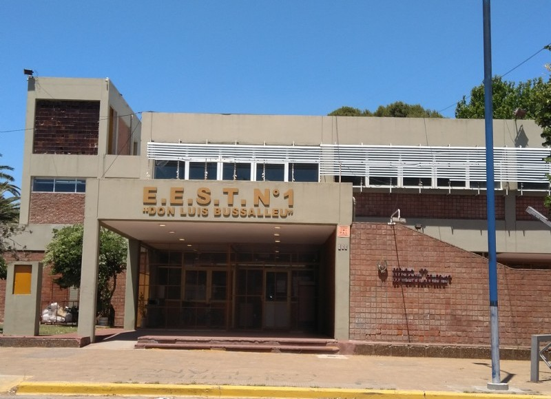

Biografía|||informacion personal
Un texto es una composición de signos codificados en un sistema de escritura que forma una unidad de sentido. También es una composición de caracteres imprimibles (con grafema) generados por un algoritmo de cifrado que, aunque no tienen sentido para cualquier persona, sí puede ser descifrado por su destinatario original. En otras palabras, un texto es un entramado de signos con una intención comunicativa que adquiere sentido en determinado contexto. Las ideas que comunica un texto están contenidas en lo que se suele denominar «macroproposiciones», unidades estructurales de nivel superior o global, que otorgan coherencia al texto constituyendo su hilo central, el esqueleto estructural que cohesiona elementos lingüísticos formales de alto nivel, como los títulos y subtítulos, la secuencia de párrafos, etc. En contraste, las «microproposiciones» son los elementos coadyuvantes de la cohesión de un texto, pero a nivel más particular o local. Esta distinción fue realizada por Teun van Dijk en 1980.1 El nivel microestructural o local está asociado con el concepto de cohesión. Se refiere a uno de los fenómenos propios de la coherencia, el de las relaciones particulares y locales que se dan entre elementos lingüísticos, tanto los que remiten unos a otros como los que tienen la función de conectar y organizar. También es un conjunto de oraciones agrupadas en párrafos que habla de un tema determinad Un texto es una composición de signos codificados en un sistema de escritura que forma una unidad de sentido. También es una composición de caracteres imprimibles (con grafema) generados por un algoritmo de cifrado que, aunque no tienen sentido para cualquier persona, sí puede ser descifrado por su destinatario original. En otras palabras, un texto es un entramado de signos con una intención comunicativa que adquiere sentido en determinado contexto. Las ideas que comunica un texto están contenidas en lo que se suele denominar «macroproposiciones», unidades estructurales de nivel superior o global, que otorgan coherencia al texto constituyendo su hilo central, el esqueleto estructural que cohesiona elementos lingüísticos formales de alto nivel, como los títulos y subtítulos, la secuencia de párrafos, etc. En contraste, las «microproposiciones» son los elementos coadyuvantes de la cohesión de un texto, pero a nivel más particular o local. Esta distinción fue realizada por Teun van Dijk en 1980.1 El nivel microestructural o local está asociado con el concepto de cohesión. Se refiere a uno de los fenómenos propios de la coherencia, el de las relaciones particulares y locales que se dan entre elementos lingüísticos, tanto los que remiten unos a otros como los que tienen la función de conectar y organizar. También es un conjunto de oraciones agrupadas en párrafos que habla de un tema determinad Soy Joaquin me apasiona la informatica desde pequeño el ajedrez y el deporte especificamente el basquet en unos momento fue full time no miento estaba obsesionado ahora solo de hobby .
Educación
Escuela|||Primaria
Escuela|||Secundaria
Escuela|||Universidad
Experiencia
sin experiencia